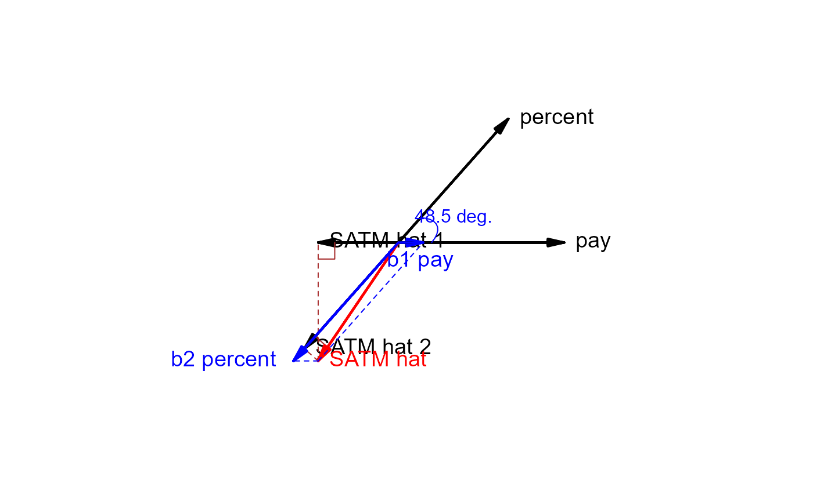

The plot method for regvec3d objects uses the low-level graphics tools in this package to draw 3D and 3D
vector diagrams reflecting the partial and marginal
relations of y to x1 and x2 in a bivariate multiple linear regression model,
lm(y ~ x1 + x2).
The summary method prints the vectors and their vector lengths, followed by the summary
for the model.
Usage
# S3 method for class 'regvec3d'
plot(
x,
y,
dimension = 3,
col = c("black", "red", "blue", "brown", "lightgray"),
col.plane = "gray",
cex.lab = 1.2,
show.base = 2,
show.marginal = FALSE,
show.hplane = TRUE,
show.angles = TRUE,
error.sphere = c("none", "e", "y.hat"),
scale.error.sphere = x$scale,
level.error.sphere = 0.95,
grid = FALSE,
add = FALSE,
...
)
# S3 method for class 'regvec3d'
summary(object, ...)
# S3 method for class 'regvec3d'
print(x, ...)Arguments
- x
A “regvec3d” object
- y
Ignored; only included for compatibility with the S3 generic
- dimension
Number of dimensions to plot:
3(default) or2- col
A vector of 5 colors.
col[1]is used for the y and residual (e) vectors, and for x1 and x2;col[2]is used for the vectorsy -> yhatandy -> e;col[3]is used for the vectorsyhat -> b1andyhat -> b2;- col.plane
Color of the base plane in a 3D plot or axes in a 2D plot
- cex.lab
character expansion applied to vector labels. May be a number or numeric vector corresponding to the the rows of
X, recycled as necessary.- show.base
If
show.base > 0, draws the base plane in a 3D plot; ifshow.base > 1, the plane is drawn thicker- show.marginal
If
TRUEalso draws lines showing the marginal relations ofyonx1and onx2- show.hplane
If
TRUE, draws the plane defined byy,yhatand the origin in the 3D- show.angles
If
TRUE, draw and label the angle between thex1andx2and betweenyandyhat, corresponding respectively to the correlation between the xs and the multiple correlation- error.sphere
Plot a sphere (or in 2D, a circle) of radius proportional to the length of the residual vector, centered either at the origin (
"e") or at the fitted-values vector ("y.hat"; the default is"none".)- scale.error.sphere
Whether to scale the error sphere if
error.sphere="y.hat"; defaults toTRUEif the vectors representing the variables are scaled, in which case the oblique projections of the error spheres can represent confidence intervals for the coefficients; otherwise defaults toFALSE.- level.error.sphere
The confidence level for the error sphere, applied if
scale.error.sphere=TRUE.- grid
If
TRUE, draws a light grid on the base plane- add
If
TRUE, add to the current plot; otherwise start a new rgl or plot window- ...
Parameters passed down to functions [unused now]
- object
A
regvec3dobject for thesummarymethod
Details
A 3D diagram shows the vector y and the plane formed by the predictors,
x1 and x2, where all variables are represented in deviation form, so that
the intercept need not be included.
A 2D diagram, using the first two columns of the result, can be used to show the projection
of the space in the x1, x2 plane.
The drawing functions vectors and link{vectors3d} used by the plot.regvec3d method only work
reasonably well if the variables are shown on commensurate scales, i.e., with
either scale=TRUE or normalize=TRUE.
References
Fox, J. (2016). Applied Regression Analysis and Generalized Linear Models, 3rd ed., Sage, Chapter 10.
Examples
if (require(carData)) {
data("Duncan", package="carData")
dunc.reg <- regvec3d(prestige ~ income + education, data=Duncan)
plot(dunc.reg)
plot(dunc.reg, dimension=2)
plot(dunc.reg, error.sphere="e")
summary(dunc.reg)
# Example showing Simpson's paradox
data("States", package="carData")
states.vec <- regvec3d(SATM ~ pay + percent, data=States, scale=TRUE)
plot(states.vec, show.marginal=TRUE)
plot(states.vec, show.marginal=TRUE, dimension=2)
summary(states.vec)
}
#> Loading required package: carData
#> x y z length
#> income 0.7754622 0.0000000 0.0000000 0.7754622
#> education 0.6842863 0.6509930 0.0000000 0.9444785
#> prestige 0.8378014 0.3553340 0.4145197 1.0000000
#> residuals 0.0000000 0.0000000 0.4145197 0.4145197
#> prestige hat 0.8378014 0.3553340 0.0000000 0.9100403
#> b1 income 0.4642947 0.0000000 0.0000000 0.4642947
#> b2 education 0.3735067 0.3553340 0.0000000 0.5155284
#> prestige hat 1 0.8378014 0.0000000 0.0000000 0.8378014
#> prestige hat 2 0.6172234 0.5871929 0.0000000 0.8519156
#>
#> Call:
#> lm(formula = formula, data = Data)
#>
#> Residuals:
#> Min 1Q Median 3Q Max
#> -29.538 -6.417 0.655 6.605 34.641
#>
#> Coefficients:
#> Estimate Std. Error t value Pr(>|t|)
#> (Intercept) -6.06466 4.27194 -1.420 0.163
#> income. 0.59873 0.11967 5.003 1.05e-05 ***
#> education. 0.54583 0.09825 5.555 1.73e-06 ***
#> ---
#> Signif. codes: 0 '***' 0.001 '**' 0.01 '*' 0.05 '.' 0.1 ' ' 1
#>
#> Residual standard error: 13.37 on 42 degrees of freedom
#> Multiple R-squared: 0.8282, Adjusted R-squared: 0.82
#> F-statistic: 101.2 on 2 and 42 DF, p-value: < 2.2e-16
#>

#> x y z length
#> pay 1.0000000 0.0000000 0.000000 1.0000000
#> percent 0.6630098 0.7486108 0.000000 1.0000000
#> SATM -0.4853306 -0.7164880 0.501098 1.0000000
#> residuals 0.0000000 0.0000000 0.501098 0.5010980
#> SATM hat -0.4853306 -0.7164880 0.000000 0.8653905
#> b1 pay 0.1492295 0.0000000 0.000000 0.1492295
#> b2 percent -0.6345601 -0.7164880 0.000000 0.9570901
#> SATM hat 1 -0.4853306 0.0000000 0.000000 0.4853306
#> SATM hat 2 -0.5689615 -0.6424199 0.000000 0.8581495
#>
#> Call:
#> lm(formula = formula, data = Data)
#>
#> Residuals:
#> Min 1Q Median 3Q Max
#> -29.697 -13.788 0.701 9.988 42.961
#>
#> Coefficients:
#> Estimate Std. Error t value Pr(>|t|)
#> (Intercept) 513.6990 16.9174 30.365 < 2e-16 ***
#> pay. 0.9718 0.6292 1.545 0.129
#> percent. -1.3743 0.1387 -9.906 3.45e-13 ***
#> ---
#> Signif. codes: 0 '***' 0.001 '**' 0.01 '*' 0.05 '.' 0.1 ' ' 1
#>
#> Residual standard error: 17.68 on 48 degrees of freedom
#> Multiple R-squared: 0.7489, Adjusted R-squared: 0.7384
#> F-statistic: 71.58 on 2 and 48 DF, p-value: 3.947e-15
#>